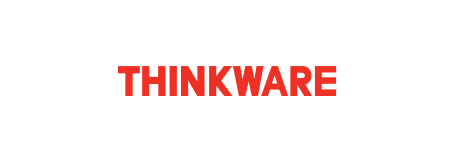

웹 서비스
TOAST를 이용하는 고객이 어떤 서비스를 이용해서 웹 서비스를 하고 있는지 확인하세요.
-

팅크웨어 ‘아이나비’ 위치기반 네비게이션 서비스
교통정보와 같이 실시간 컨텐츠를 요청하는 통신형 시장에서는 유동적인 사용량에 따라 빠른 대응이 필요합니다. 팅크웨어가 제공하는 실시간 교통 정보 제공서비스는 돌발상황에 대해 유연하고, 빠른 서버 운영이 필요하기 때문에 토스트 인프라 서비스를 이용하게 되었습니다. ‘Maps’서비스는 쉽게 웹 지도의 표출, 탐색, 검색 등을 사용할 수 있는 Map API로 토스트를 통해 서비스될 예정입니다.
-

(주)콩두컴퍼니
이스포테인먼트를 지향하는 콩두컴퍼니에서 유연한 서비스를 제공하기 위해 TOAST Infra를 이용하고 있습니다. 인프라 구성을 위한 초기 비용 없이 원하는 인스턴스를 생성하여 빠른 서비스 구축이 가능했습니다. 또한 고객 안내를 위한 채널로 SMS 서비스를 활용하여 빠른 안내가 필요한 정보에 대해 메시지 발송을 사용중입니다.
이용서비스
-
Instance 안정적이고 합리적인 가격의 Instance를 활용하여 서버 구축
-
SMS 고객 안내를 위한 채널로 SMS 활용
-
-
망고플레이트
빅데이터를 기반으로 맛집 검색 및 추천 서비스를 제공하는 서비스로, 앱을 출시하며 다양한 모바일 기기를 보유하기 어려워 TOAST의 Mobile Test를 활용하여 쉽고 빠르게 앱을 테스트 하고 있습니다. 또한 SMS 보다 저렴한 비용으로 1,000자까지 발송 가능한 알림톡을 활용하여 매장의 주문 안내, 취소 안내 등 사용자 행위에 대한 알림 메시지를 발송하고 있습니다.
이용서비스
-
Mobile Test 앱 배포 전 다양한 단말에서 테스트 하기 위해 활용
-
KakaoTalk Bizmessage 매장에서 사용자가 주문, 주문 취소, 대기 등록 등 행위를 하는 경우 이에 대한 알림 메시지 전달할 때 사용
-